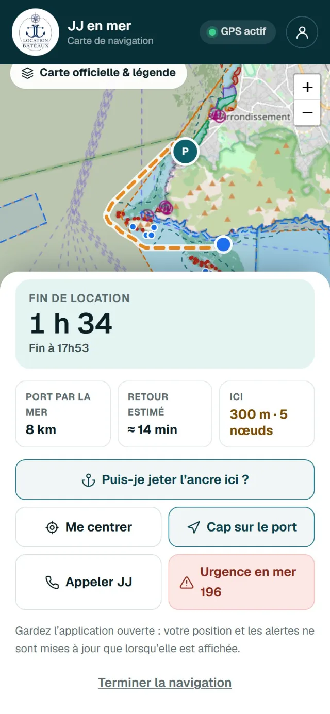
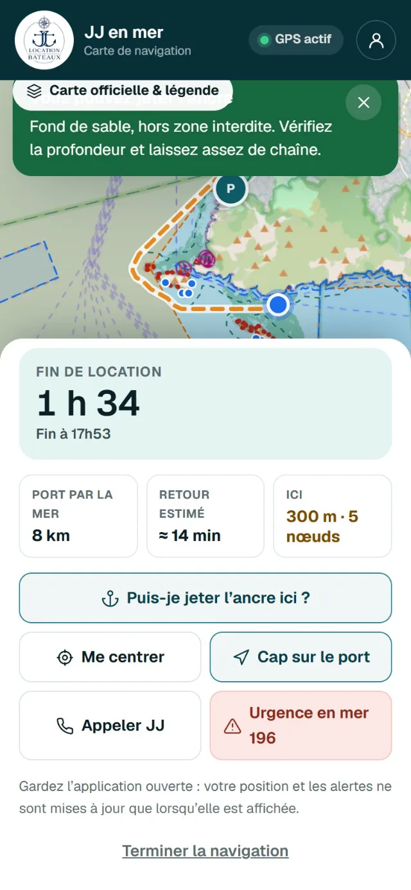
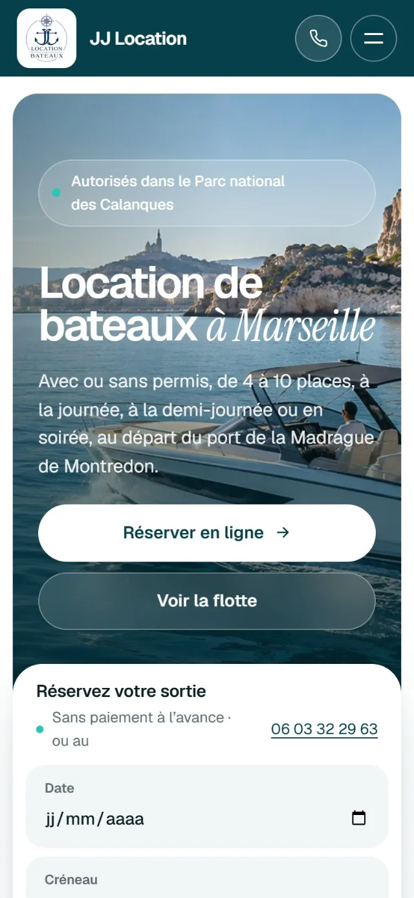
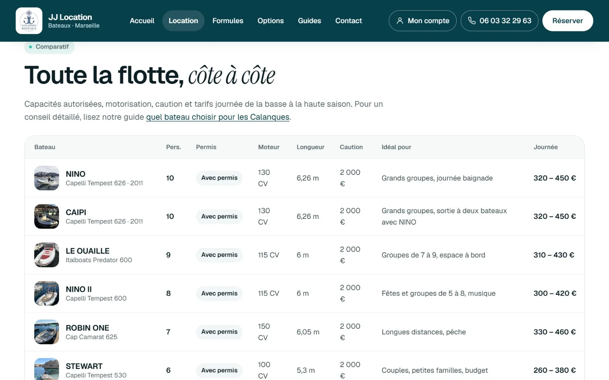

Loueurs de bateaux · bases nautiques · sorties en mer
Votre site de location et toute votre flotte, pilotés depuis un seul outil.
Un site vitrine qui prend les réservations, un dashboard qui gère planning, bateaux et cautions, et la localisation par téléphone pendant toute la sortie.
50 € HT / moisSans frais d'installation ni frais de création de site
Exemple réel : JJ Location Bateaux · données de démonstration
De la réservation au retour au port
Une sortie en mer, suivie du début à la fin.
Le site, le dashboard et la carte en mer partagent les mêmes données : pas de double saisie, pas de tableau à tenir à côté.
1
Le client réserve
Il choisit un bateau, un créneau et ses options sur votre site, selon les disponibilités réelles.
2
Vous validez
Permis, pièce d'identité, caution et paiement sont contrôlés dans une seule fiche.
3
Il navigue serein
Sur son téléphone : carte officielle, temps de retour au port et rappels avant la fin.
4
Vous suivez la flotte
Positions partagées, bateaux qui doivent rentrer, carburant et caution au retour.
La fonctionnalité à part : localisation par téléphone
Chacun sait où il est, pendant toute la location.
Le téléphone du client devient un outil de navigation simple, et votre équipe voit les bateaux en mer sur une carte, avec l'heure de chaque position.
Position et retourFin de location, distance et temps de retour au port par la mer.

Cap sur le portLe trajet de retour est calculé sur l'eau, en contournant la côte et les îles.

« Puis-je jeter l'ancre ici ? »Zone interdite, posidonie ou sable : la réponse à l'endroit exact.
A. Rejoindre le port
DisponibleItinéraire vers le port de départ en un geste depuis le site
DisponiblePoint de rendez-vous rappelé dans l'e-mail de confirmation
BientôtBouton « Me localiser » : position du client et itinéraire sur la carte
BientôtLien de localisation ou consignes envoyés par votre équipe
B. Naviguer en sécurité
DisponibleCarte officielle du Parc : zones interdites, mouillage, bande des 300 m
DisponibleAlertes de zone et de vitesse, rappels avant la fin de la location
DisponibleAppeler le loueur ou les secours (196) depuis la carte
DisponibleSuivi écran éteint avec l'application Android
C. Suivre la flotte
DisponibleBateaux du jour sur une carte, avec l'heure de chaque position
DisponibleTrajet de la sortie, temps de retour, bateaux qui doivent rentrer ou en retard
DisponibleAppel du client d'un geste depuis la fiche
ÉvolutionTraceur GPS à bord pour suivre un bateau sans téléphone
Une position vient toujours d'un téléphone à bord. Celui du client qui a lancé la navigation, ou un téléphone dédié. Sans source GPS à bord, le bateau n'apparaît pas sur la carte.
Jamais d'ancienne position présentée comme du direct. Chaque bateau affiche « position il y a X min ». Sur iPhone, la carte web se met à jour tant qu'elle reste ouverte.
Des données limitées au besoin. Le suivi démarre à l'initiative du client, le trajet est effacé après 48 h et la dernière position 6 h après la sortie.
Le site vitrine
Un site qui présente votre flotte et prend les réservations.
Votre logo, vos couleurs, vos bateaux. Les disponibilités, les tarifs et les options viennent directement de votre dashboard : ce que voit le client est toujours à jour.
Présentation de votre activité
Fiches bateaux et comparatif
Capacité, permis, équipements
Tarifs par saison et caution
Réservation selon les disponibilités
Options (paddle, bouée…)
Espace client et dépôt des documents
Boutons d'appel et contact
Adapté mobile et tablette
Référencement technique de base
La personnalisation porte sur votre identité visuelle et les éléments prévus par le produit. Un design entièrement sur mesure ou des fonctionnalités spécifiques font l'objet d'un devis.
votre-location.fr

Le dashboard de gestion
Planning, flotte, clients et argent, au même endroit.
Les opérations de la journée sont centralisées et accessibles depuis un ordinateur, une tablette ou un téléphone, par vous et votre équipe.
La journée et la saison d'un coup d'œil
Chaque bateau, chaque créneau : vous voyez ce qui est réservé, libre ou à valider, et vous réservez un créneau libre en un clic pour un client au téléphone.
Sorties du jour, à venir, à valider et CA à venir
Planning par bateau et par créneau (journée, demi-journée, soirée)
Un bateau ne peut pas être réservé deux fois sur le même créneau
Fermetures : maintenance, météo, sortie privée
Les bateaux du jour, sur une carte
Les positions partagées par les téléphones à bord s'affichent sur la carte officielle, avec le trajet, le temps de retour et l'heure de la dernière position.
Statuts : en mer, doit rentrer, en retard
Distance du port et temps de retour estimé
« Position il y a X min » pour chaque bateau
Appel du client et fiche en un clic
Votre flotte, vos règles
Chaque navire a sa fiche : elle alimente le site, le planning et la carte en mer. Masquez un bateau, il n'est plus réservable.
Le client dépose son permis et sa pièce d'identité depuis son espace. Vous contrôlez tout dans la fiche, puis vous validez : il est prévenu par e-mail.
Documents vérifiés, caution reçue, paiement et moyen de paiement
Carburant au retour, caution restituée ou retenue
Historique des actions et fiches clients
Documents supprimés automatiquement après la durée choisie
Bientôt : état des lieux au départ et au retour, avec checklist, photos et signature.
Chiffre d'affaires, encaissements et carburant
Sur la période de votre choix : ce que chaque bateau rapporte, ce qui est encaissé, ce que coûte le carburant et ce qui reste.
CA brut, encaissé, carburant et net estimé
Détail par bateau et par mois
Occupation de la flotte, réservations du site ou de l'équipe
Export Excel / CSV
Des indicateurs de gestion, pas une comptabilité : le dashboard ne remplace pas votre logiciel comptable ni vos déclarations fiscales.
La carte officielle, plus vos propres conseils
La carte en mer affiche la réglementation officielle. Vous y ajoutez vos zones : elles apparaissent chez le client et déclenchent une alerte s'il y entre.
Zones conseillées, de prudence ou interdites
Par type de bateau (avec ou sans permis)
Position du port, déplaçable sur la carte
Vitesses et marge pour le temps de retour
Chacun accède à ce dont il a besoin
Le gérant administre tout. Les employés gèrent le planning, les clients et les validations, sans toucher aux tarifs ni aux réglages.
Rôles : administrateur, employé, client
Connexion Google ou code reçu par e-mail
Réservation en ligne activable, délai maximum de réservation
E-mails de confirmation et de notification
Le parcours de votre client
Sept étapes, un seul outil.
De la découverte de votre flotte jusqu'au retour au port, chaque étape est prise en charge par la plateforme.
01Choisir son bateauCapacités, tarifs, permis et équipements comparés.
02Réserver son créneauDisponibilités réelles et options.
03Recevoir la confirmationRécapitulatif et point de rendez-vous par e-mail.
04Rejoindre le portItinéraire vers le port depuis le téléphone.« Me localiser » bientôt
05Effectuer le départDocuments vérifiés, caution, consignes.État des lieux photo bientôt
06Suivre la locationCarte en mer, rappels, appel du loueur.
07Rendre le bateauCarburant, caution, clôture de la réservation.
Évolutions incluses
Déjà en mer, et ça continue.
Les évolutions du logiciel font partie de l'abonnement. Une fonction n'est annoncée comme disponible qu'une fois livrée et testée.
Déjà en place
Réservation en ligne sans double réservation d'un bateau
Carte officielle, alertes de zone et de vitesse, temps de retour par la mer
Suivi GPS écran éteint avec l'application Android
Onglet « En mer » : positions, trajets, retours et retards
Validation documents, caution et paiement dans une fiche
CA, encaissements, carburant et export CSV
Prochaines évolutions
Priorité 1Bouton « Me localiser » et itinéraire vers le port dans l'espace client
Priorité 1Planning et départs / retours encore plus rapides au quotidien
Priorité 2État des lieux avec checklist, photos et signature
Priorité 2Carte de flotte alimentée par un traceur GPS ou un téléphone dédié
Priorité 3Alertes de sortie de zone côté équipe et historique des trajets
Priorité 3Notifications automatiques et rapports financiers
JJ Location Bateaux

Déjà en service
JJ Location Bateaux, Marseille
Sept bateaux avec ou sans permis, au départ du port de la Madrague de Montredon, aux portes du Parc national des Calanques. Le site, les réservations, la flotte, la carte en mer et le suivi des sorties tournent sur la même plateforme.
Visitez leur site, puis ouvrez la carte en mer sur votre téléphone, au port ou en mer, pour la voir en situation.
Le dashboard de JJ est privé : les captures de cette page montrent sa véritable interface avec des données fictives. Démonstration complète sur demande.
Tarif
Une solution complète, sans frais d'installation.
50 € HT par mois. C'est tout pour votre logiciel. Pas de frais de création de site, pas de frais de mise en service : un abonnement simple et transparent.
Offre unique0 € d'installation
Solution Nautique
50 €HT / mois
Tout le nécessaire pour présenter votre flotte et gérer vos locations.
Site vitrine personnalisé
Fiches bateaux et réservation en ligne
Dashboard de gestion de la flotte
Planning, validations et suivi des clients
Carte en mer et suivi des bateaux par téléphone
Suivi du CA, des encaissements et du carburant
Gestion de l'équipe selon les rôles disponibles
Maintenance et hébergement selon le périmètre contractuel
Évolutions du logiciel selon les modalités annoncées
Nom de domaine : à la charge du client. Vous payez uniquement sa réservation et son renouvellement, au tarif du prestataire choisi.
Ce que vous payez
Création du site
0 €
Mise en service
0 €
Abonnement logiciel
50 € HT / mois
Nom de domaine
Tarif du prestataire
Sur 12 mois
600 € HThors nom de domaine
Montants hors taxes. La TVA est appliquée selon le régime fiscal en vigueur.
Ce qui reste à part
Matériel GPS : un traceur à bord (boîtier et abonnement de données) reste à votre charge si vous en équipez vos bateaux.
Services tiers payants : SMS ou autres services externes, précisés avant toute souscription.
Sur devis : développements spécifiques, design entièrement sur mesure, migrations complexes, référencement avancé.
Non compris : comptabilité certifiée et déclarations fiscales.
Démarrage
On prépare tout. Vous ajoutez vos bateaux et vos créneaux.
La préparation de votre compte, de votre site et de votre carte est comprise dans l'abonnement.
01
Vos informations
Logo, coordonnées, port de départ, bateaux, tarifs et conditions de location.
02
Configuration
Identité visuelle, site, flotte, créneaux, port et zones de navigation, compte administrateur.
03
Prise en main
Présentation du dashboard et de la carte en mer, vérification ensemble que tout fonctionne.
04
Mise en ligne
Votre site est publié : vos clients réservent, vous gérez vos sorties depuis le dashboard.
Questions fréquentes
Tout est clair avant de larguer les amarres.
Une autre question ? Écrivez-nous, nous vous répondons.
Y a-t-il des frais d'installation ou de création ?
Non. Aucun frais de création de site, d'installation ou de mise en service. Vous payez l'abonnement de 50 € HT par mois et, à part, votre nom de domaine.
Faut-il un boîtier GPS sur chaque bateau ?
Non pour démarrer : la position vient du téléphone du client à bord, quand il lance la carte en mer. Pour suivre un bateau sans téléphone à bord (bateau parti sans le client, par exemple), il faut un traceur GPS ou un téléphone dédié qui transmet sa position : c'est une évolution prévue, et le matériel reste à votre charge.
Ça marche sur iPhone et sur Android ?
La carte en mer fonctionne dans le navigateur de tous les téléphones récents, en HTTPS, avec l'autorisation de localisation : elle se met à jour tant qu'elle reste ouverte. L'application Android ajoute le suivi écran éteint et garde les positions en mémoire quand le réseau coupe. Les modalités de mise à disposition de l'application sont précisées avant souscription.
Et les données de localisation de mes clients ?
La collecte est limitée au besoin : le suivi démarre à l'initiative du client, après une explication, et s'arrête au retour au port. Le trajet est effacé après 48 h, la dernière position 6 h après la sortie, et seule votre équipe connectée y a accès. Vos conditions doivent informer vos clients de ces usages et de ces durées.
Mes clients peuvent-ils payer en ligne ?
La réservation se fait sans paiement à l'avance. Les paiements (espèces, carte, chèque, virement) et la caution sont enregistrés dans la fiche de réservation. Le paiement en ligne n'est pas compris aujourd'hui.
Les rappels par SMS sont-ils inclus ?
Les confirmations partent par e-mail, et les rappels de fin de location s'affichent sur le téléphone du client pendant la sortie. L'envoi de SMS passe par un service tiers dont le coût est facturé séparément ; il vous est précisé avant toute souscription.
Le dashboard remplace-t-il ma comptabilité ?
Non. Il calcule des indicateurs de gestion (CA, encaissements, carburant, net estimé) et permet un export CSV, mais il ne remplace ni un logiciel comptable, ni une comptabilité certifiée, ni vos déclarations fiscales.
J'ai plusieurs ports ou bases, est-ce possible ?
Le port de départ et de retour se règle dans le dashboard. L'offre comprend un site par entreprise : les conditions pour plusieurs bases sont étudiées et précisées avec vous avant souscription.
Que couvrent l'hébergement et la maintenance ?
L'hébergement, les sauvegardes, les mises à jour et l'assistance sont assurés selon le périmètre défini dans les conditions contractuelles, qui précisent les délais de prise en charge et les modalités de contact du support.
Mes données m'appartiennent-elles ?
Oui, les informations que vous fournissez restent les vôtres. Les conditions de restitution de vos données en fin de contrat, ainsi que les modalités de résiliation, sont détaillées dans le contrat.
Parlons de votre flotte
Votre site, votre flotte et votre carte en mer, sans frais d'installation.
Dites-nous qui vous êtes : nous revenons vers vous pour une démonstration et la préparation de votre espace.